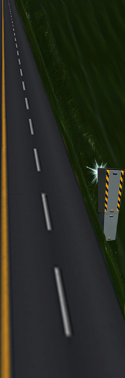

Bienvenue
Qui sommes-nous ? Bienvenue sur notre page. Notre nom d’équipe est 404 Name Not Found. Cette année, le thème est la sécurité routière car le premier taux de mortalité chez les jeunes(16 ans - 25 ans) sont les accidents de la route. Nous sommes une équipe de 17 personnes regroupant différentes filières : informatique, technico-commercial, STID, InfoCom. Cette année, nous avons décidé de réaliser cinq défis : Réaliser un calendrier de l’avent proposé par Ubisoft Réaliser la meilleure mascotte de la nuit de l’info 2017 Rendre le site accessible Réaliser un Chatbot proposé par LCL Réaliser un Easter Eggs
